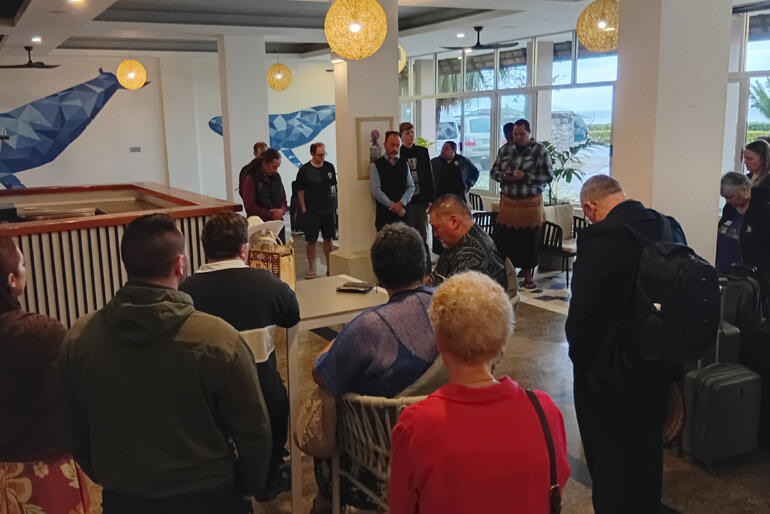
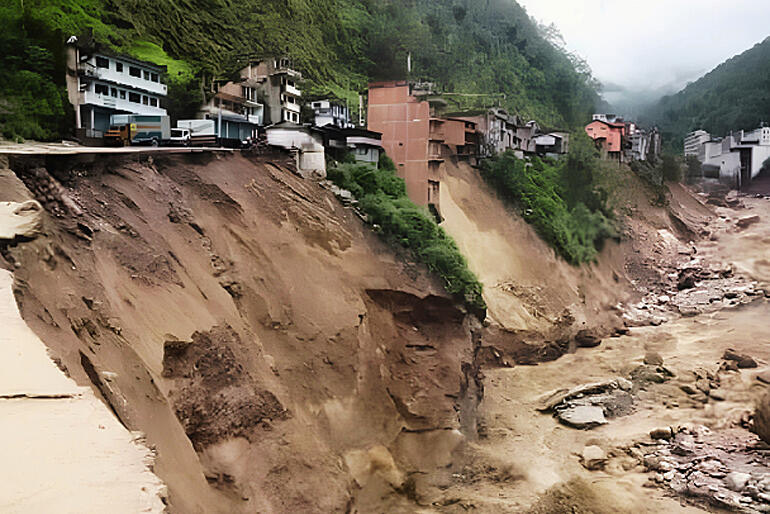
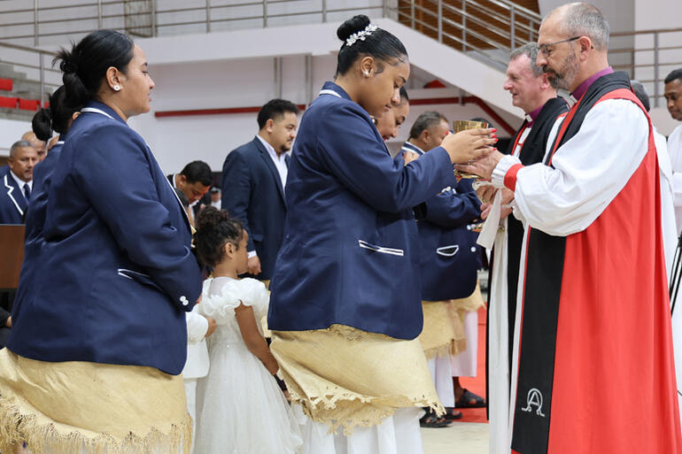
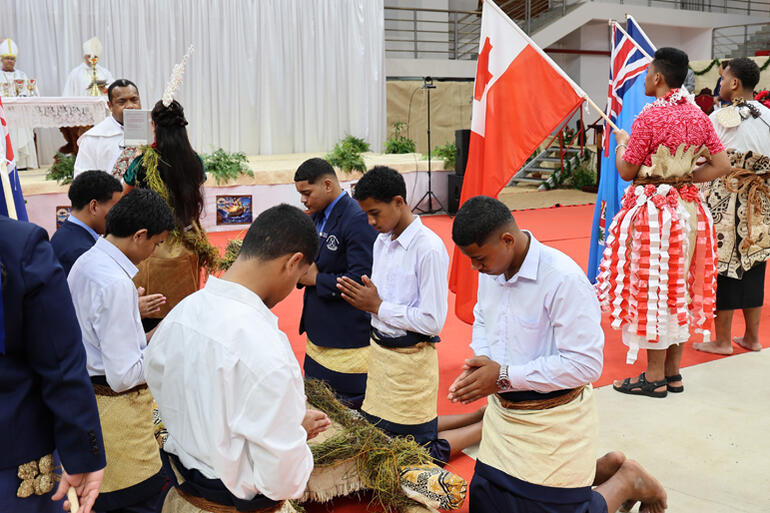

Te Hīnota Whānui 2026 · Nukuʻalofa
Equity leads historic St John’s transfer
The 67th General Synod has passed an historic Bill empowering Te Pīhopatanga o Aotearoa to exercise tino rangatiratanga over the St John’s College Trust Board education fund distributions.
Read the full story
Special coverage
One Mission, One Ocean, One Vaka
Reporting from the 67th General Synod Te Hīnota Whānui, hosted by the Diocese of Polynesia in Nukuʻalofa, Tonga, 15–21 August 2026.
Latest Ngā rongo o te wā
More news-

General Synod Anglican whale-watchers return safely All thirteen delegates are home after their vessel partially sank off Tonga. “No one was left behind.” -

World Anglican Missions appeals for Nepal Flash floods and mudslides in northern Nepal have destroyed homes, with Anglican Missions responding through Tearfund’s local partners. - This Church Opening churches’ digital doors Disability Ministry Educator Rev Vicki Terrell is encouraging Anglican churches to expand our digital welcome.
- Worship Lectionary offers labour of love For Rev Lawrence Kimberley, compiling the annual schedule of readings is a spiritual endeavour and an act of service.
-

General Synod Te Hīnota launches in prayer More than 400 worshippers joined the Opening Eucharist at Tonga College Indoor Stadium.
Around the Communion Te ao whānui
All world newsCurated · linked to the source
The best of what Anglicans worldwide are reporting — curated by Taonga editors, linking to the source.
Taonga Magazine
Twenty years in print
Anglican Taonga ran as a print magazine from 1999 to 2018. Every issue is preserved in the Church’s archives portal, Pūmotomoto, and in print at the John Kinder Theological Library.
-
Lectionary 2026
Te MaramatakaThe year’s readings for worship, in te reo Māori and English.
-
A New Zealand Prayer Book
He Karakia Mihinare o AotearoaThe Church’s prayer book, free to read online.
-
Preaching & worship resources
Notes and links for this Sunday, gathered by Taonga.
-
Dioceses & Hui Amorangi directory
Find your local diocese, amorangi or parish.
Keep up with what Anglicans are doing and saying.
The Taonga mailout delivers the week’s news and views, fairly and honestly.
Ka pai — you’re on the list. (Demo only — no address was stored.)
Free · unsubscribe any time.
NewsGeneral Synod Te Hīnota Whānui
General Synod · Te Hīnota Whānui 2026
Equity leads historic St John’s transfer
The 67th General Synod has passed an historic Bill empowering Te Pīhopatanga o Aotearoa to exercise tino rangatiratanga over the St John’s College Trust Board education fund distributions.
Kupu Māori and Pasifika terms are underlined — select one for a short explanation. · Kuputaka | Glossary
General Synod Te Hīnota Whānui passed a Bill today that requests Māori develop a way to exercise over the distribution of education funds from the St John’s College Trust Board (SJCTB).
Earlier today Bishop of Aotearoa Archbishop Don Tamihere articulated the challenge of Bill #15 in the primatial charge delivered to the 67th General Synod Te Hīnota Whānui.
For over three decades, – our Constitution – has promised that our three Tikanga stand as co-equal partners: each with the unmediated to order its own life, each honoured, none subordinate.
“Part of our work this Synod will be to engage in shared and to address that which constrains, and obstructs, and frustrates our collective liberation,” he said.
Next Archbishop Don’s charge reminded the Church that the promise of Te Pouhere has not been a promise kept.
“The lived reality is that Tikanga Māori and Tikanga Pasefika remain systemically marginalised within our shared life – in the distribution of resources, in the weight of our voices, in the assumptions about whose ways of being are ‘normal’ and whose ways require accommodation first. These are truths that we must name, if only that we might leave them behind.”
As the Bill passed today, Archbishop Don acknowledged that Tikanga Polynesia and Tikanga Pākehā had chosen to assent to the Bill in a spirit of trust, rather than by adding arduous demands or guarantees.
“Today in taking a high trust action, you have released us and given us permission to respond in a high trust way,” he said.
Education funding affects the whole Church
The Bill has major implications for the whole Church going forward, as St John’s College Trust distributions underwrite much of the Anglican Church in Aotearoa, New Zealand and Polynesia’s work in education each year, including that offered by and Anglican schools, colleges, and Diocesan-based educators, including bishops.
Today’s direction in Bill #15 also stands on the shoulders of an earlier motion passed at Te Hīnota Whānui 2012 in Fiji, moved by the late Professor Whatarangi Winiata and Dr Tony Fitchett. That motion had called for a three-tikanga group to investigate how Tikanga Māori could take full guardianship over distribution of 50% of the Trust Board’s allocations.
Moves on equity began outside Synod
Today’s decision also follows two years of preparatory work by church leaders, including in the General Synod Standing Committee, and an intensive whole-Synod talanoa on equity led by Tikanga Māori on Monday 17 August.
This week’s talanoa included an overview of the historic and present-day financial inequities between the three Tikanga, introduced by Canon Isaac Beach, opened in prayer by the Very Rev Ruihana Paenga and unpacked in detail by Archbishop Don Tamihere and Dr Jenny Te Paa Daniel.

Photos: Anglican Taonga.
Bill #15 suspends parts of St John’s College Canon
The Bill suspends portions of ‘Canon II Title E of St John’s College and the utilisation of the St John’s College Trust Funds’ for a two-year period. This enables Tikanga Māori to appoint up to seven members to form a new cohort for Te Kotahitanga, the Church’s educational funding advisory body to the St John’s College Trust Board.
The intention is that over the next two years Tikanga Māori will establish a viable mechanism by which to exercise guardianship of the Trust’s distribution on behalf of the whole Church into the future.
“We are proud as Tikanga Māori to share the same and the same Moana as Tikanga Pasefika and Tikanga Pākehā. We want to see Te Oranga Ake – flourishing life – realised for each of us, and therefore for all of us, together, none excluded, everyone included.”
Mō tēnei tuhinga | About this story
Reported by Taonga News from Nukuʻalofa. Read the full text of Bill #15 on the General Synod website. Corrections: news@anglicantaonga.org.nz
Related Ngā kōrero e pā ana
The Taonga mailout
The week’s news and views, fairly and honestly. No noise.
He Whakaaro · Comment
Returning to Ruatoria for Easter
Archbishop Don Tamihere reflects on his return home to his tipuna whare, Rākaihoea, in Kākāriki, near Ruatoria, for Easter 2026.
The Most Rev Don Tamihere
Pīhopa o Aotearoa · Primate and Archbishop
21 April 2026 · 7 min read
Kupu Māori and Pasifika terms are underlined — select one for a short explanation. · Kuputaka | Glossary
On Easter weekend I returned to the East Coast and to our , Rākaihoea, in Kākāriki, near Ruatoria. This is the place where I spent much of my childhood and it continues to shape me still.
It is said of our tipuna: Rākaihoea tipi whenua, tupu tāngata – Rākaihoea works the land, and grows people. Te Whānau a Rākaihoea have always been the kind to provide house and home, to gather kai from land and sea, and manaaki people in a real and no-nonsense fashion.
Rākaihoea whare is notable for its no-frills simplicity. And yet it is the home and origin of many acclaimed master carvers including Te Kihirini, Tamati Ngakaho, Te Karaka Ngakaho, and others from the famed Iwirākau school who together have created the most stunning examples of carved whare, churches, and waka in Aotearoa. Their home marae remained plain and unassuming, while they applied their skill and creativity to embellish and flourish others.
Rākaihoea are also a people of . Names like Peta Whekana (Ringatū), and great Mihinare priests like Rev Pineamine Tamahori, Rev Canon John Thornton Tamahori, Rev Aperahama Tātaikōkō Tāmihere, Archdeacon Anaru Kingi Takurua, Rev Pine Campbell, Rev Pane Kawhia, and Rev Connie Ferris and others can be found among the descendants of Rākaihoea.
Sir Apirana Ngata, himself also a part of Te Whānau a Rākaihoea, played a key role in establishing the first Māori Anglican Bishop and the Bishopric of Aotearoa.
“We wanted a Māori as the nucleus of a movement and of an eventual organisation that he will create gradually from below — the natural growth rooted in the Māori heart & mind & shaped to suit the characteristics of the people. Truly this ethnology is a fine thing even as applied to the evolution of a Māori Church that takes cognisance of the physical, mental, social & spiritual make-up of the modern Māori — the slightly modified descendant of his tohunga forbears.”
It was fitting then that we gathered on Easter Sunday morning at Meri Kuia (St Mary’s Church, Tikitiki), the whare that Sir Apirana envisaged as a deep theological statement from Ngāti Porou, to remind ourselves of the legacy of faith that our tīpuna had gifted us.
We remembered Piripi Taumata-a-kura, the Māori evangelist who first brought the Gospel to the Waiapu Valley in 1834. He had been held in captivity in the north for more than a decade, and when he finally returned his people rejoiced. It was as if he had returned from the dead. In his last sermon, preached at Te Ōhākī (St Luke’s, Waiomatatini) on Easter Sunday in 1868, he reflected on the blessing he’d had to live a resurrected life.
We celebrated this Easter Sunday with 11 baptisms and 21 confirmations at St Mary’s Church, followed by a further 3 baptisms and 17 confirmations at Rākaihoea whare. I’m sure that Piripi Taumata-a-kura would rejoice with us as we strive to live in the way that he did.
This Easter has been a time of , , whakapono, and whānau for me. I reflect a lot on how beautiful and powerful it is to hail from such a simple, plain, and humble whare – and to be counted among such a profound and beautiful people.
The origin of Kākāriki marae speaks to this somewhat. The marae began not as a marae, but as the home of our tipuna kuia Hera Waitekaha. Gradually, the home extended to become a larger kāuta and wharekai. Eventually, a wharemoe was added and given a name that brought the whakapapa of the local whenua together: Rākaihoea. That’s why this place has always had such a special feeling. It has always felt like home.
As part of our time at Rākaihoea, which included wānanga and , we also gave thanks in the whare one last time for all that it has represented to us. The whare is now closed. Soon we will be taking this house down so that in time a new whare will be erected for new generations to live, laugh, and love within.
There is much in this moment to compare with the story of Easter, and much for us to reflect upon. Nothing is more important, however, than our commitment to be there for each other through thick and thin.
Our thanks to all those at Rākaihoea (including Hilton, Ripeka, Pineamine, Ngaire, Ngarimu, Sir Selwyn and the rest of the whānau) and Meri Kuia (Patrick, Harata, and the whānau at Rāhui), and our minita led by Archdeacon Merekaraka Te Whitu, for an amazing Easter weekend.
A special acknowledgement and aroha to those who were baptised and confirmed, and their whānau.
May you live as our tīpuna lived.
May you live as Piripi Taumata-a-kura lived. May you live a resurrected life.
More from He Whakaaro Comment
All contributorsTopic | Kaupapa
General Synod Te Hīnota Whānui 2026
The 67th General Synod met in Nukuʻalofa, Tonga, 15–21 August 2026, hosted by the Diocese of Polynesia — the theme: One Mission, One Ocean, One Vaka. All Taonga reporting, gathered in one place.
9 stories · 15–28 August 2026
19 Aug 2026
Equity leads historic St John’s transfer
The 67th General Synod has passed an historic Bill empowering Te Pīhopatanga o Aotearoa to exercise tino rangatiratanga over the St John’s College Trust Board education fund distributions.
27 Aug 2026
Anglican whale-watchers return safely
All thirteen delegates are home after their vessel partially sank off Tonga. “No one was left behind.”
17 Aug 2026
Talanoa paves way for equity
18 Aug 2026
Primates launch Synod vaka
16 Aug 2026
Te Hīnota launches in prayer
More than 400 worshippers joined the Opening Eucharist at Tonga College Indoor Stadium.
15 Aug 2026
Synod enjoys abundant welcome
14 Aug 2026
General Synod heads to Tonga
General Synod · 14 Aug 2026
Dioceses discuss equity and assets
Photo essay · 16 Aug 2026
Photos from the Opening Eucharist
He Whakaaro · Comment
Voices of the Church
Essays and reflections from bishops, priests and lay voices across the three tikanga, each given room to say something properly.
Essays and reflections
- John Bluck Te Pouhere – our mooring post Bishop John Bluck reflects on how far the Anglican Church in Aotearoa New Zealand and Polynesia has come to embed our life in these islands – and how far we have to go.
- Anashuya Fletcher Jesus, beggars & Move-Ons Bishop Anashuya Fletcher reflects on what Jesus would do about people rough sleeping in CBDs.
- Justin Duckworth Waitangi: Return to our roots Archbishop Justin Duckworth, senior Bishop of the New Zealand Anglican dioceses, reflects on the meaning of Waitangi Day as he heads to Waitangi to join karakia at the dawn ceremony in 2026.
- Chris Farrelly Govt’s ‘move on’ plan is chilling Former Auckland City Missioner Chris Farrelly, who now works with Habitat for Humanity, speaks out on the Government’s plan to give Police powers to ‘move on’ people sleeping rough.
- Vicki Terrell Embracing impairment, finding resurrection When Vicki Terrell sees the wounds of crucifixion still visible in the risen Jesus, she’s encouraged: human impairments are not only part of life, but part of resurrection.
- Chris Harper Prayer unifies and transcends Canada’s National Indigenous Anglican Archbishop Chris Harper reflects on the transcendent power of prayer for the National Indigenous Day of Prayer.
- Rob Baigent-Ritchie Treaty Bill: an assault on our soul Rev Rob Baigent-Ritchie from Taranaki Cathedral reflects on taking part in the historic Toitū te Tiriti hīkoi to Parliament.
- Lynne Dempsey Stand up for Palestine Ōpōtiki-based Anglican Lynne Dempsey wants her fellow Christians, and her Church, to make a stronger call for peace for the people of Palestine and Israel.
More whakaaro
- Money follows missionJustin Duckworth
- Palestinians just want to liveCole Martin
- ‘What I’ve seen in Gaza is unspeakably evil’Nick Maynard
- Kiingitanga leads seismic shift
- Where to partner? It’s 2024
- Are we bad faith Treaty partners again?
- Barbie’s Ken, men and JesusOllie Alexander
- Revisiting Mary Magdalene’s demons
- Blessing Hukarere after the floodAndrew Hedge
Ngā kaituhi · Contributors
Every Taonga voice on one page — in place of a hundred-name menu.
- Ollie Alexander
- Rob Baigent-Ritchie
- Isaac Beach
- John Bluck
- Christine Bryant
- Peter Carrell
- Lynne Dempsey
- Justin Duckworth
- Chris Farrelly
- Anashuya Fletcher
- Chris Harper
- Andrew Hedge
- Jade Hohaia
- Hirini Kaa
- Cole Martin
- Nick Maynard
- David Moxon
- Ruihana Paenga
- Bosco Peters
- Liam Rātana
- Scottie Reeve
- Don Tamihere
- Jenny Te Paa Daniel
- Vicki Terrell
- Adrienne Thompson
- Michael Toy
- Gillian Townsley
- Kelvin Wright
…and more, kept in the archive.
Features
The long read
The pieces that sit under the news: spirituality, justice, books and film.
Strand · Spirituality
Listen, the river is singing
An encounter with the Maitai River sets spiritual director Adrienne Thompson on a journey towards a more hope-filled life.
By Adrienne Thompson
- Remembering Rēnata KawepōFor Lent, Rev Zhane Tahau Whelan retells the story of his ancestor Rēnata Kawepō: ariki, missionary, church builder, saint.
- New Hāhi leaders for MurihikuArchdeacon Mere Wallace celebrates new clergy, kaikarakia and pou mihana for the Māori Anglican church in Murihiku.
- When Pentecostals encounter AnglicanismCameron Coombe tracks the movement of Christians from Pentecostal to Anglican churches and wonders how this may be a movement of the Spirit.
- Celebrating Tikanga Youth Sunday
Strand · Social Justice
Kit teaches care for abuse survivors
A recently released toolkit for Aotearoa New Zealand churches offers a first responder’s guide to accompanying survivors of sexual abuse.
- Disability funding cuts hit hardDisability Ministry Educator Rev Vicki Terrell shares her sense of being at the foot of the cross, as the Disability Community reels from cuts to essential health and wellbeing funding.
- Reframing justice: words that workThirty Christian communicators and advocates gathered in Auckland to learn better ways to advocate for people seeking asylum.
- He Puapua: a fair go for MāoriBishop Richard Randerson says He Puapua, the report on a new constitution, offers a fairer go for Māori.
- NZ churches stand with Ukraine
Strand · Books & Film
Books
This is no country for old men
John Bluck’s autobiography is a page-turner, brutally hard to put down.
Review Becoming PākehāGood reads: Becoming Pākehā
Tim McKenzie sets off in search of waypoints on the journey between cultures in Bishop John Bluck’s book.
Review Tokens of TrustThankfully, God is still God
Sheer breadth of knowledge, coupled with a deeply spiritual life, makes Rowan Williams’ writing accessible, thought-provoking and, at times, intensely disturbing.
Review Shaking the Apple TreePoems rage against church abuse
The Very Rev Ben Truman reviews Dr Jane Simpson’s book of poems responding to sexual abuse by clergy.
ReviewFilm
Barbie meets feminist theology
Dr Gillian Townsley heads to the cinema with the eyes of a feminist theologian and Anglican girls’ school chaplain.
Review 12 Years a SlaveBaring the depravity of slavery
A powerful film, but a trial for tender souls.
Review GravitySpace dishes up some body blows
‘Lost in space’ for people who like stunning visuals.
ReviewAround the Communion · Te ao whānui
What Anglicans worldwide are reporting
Curated by Taonga editors, linking to the source. Every link is labelled, and opens on the publisher’s site.
33 links this season
Faith leads young Kenyans on climate
RNSTaybeh suffers settler attacks
Al JazeeraArchbishop of Canterbury recommits to £100m fund
The GuardianDecline is not the whole story
Church Times- Scottish bishop accused of bullying to retire
- Haiti: Violent gangs target churches, close church schools
- St Michael’s Kelburn opposes cellphone tower
- Fiji Methodists to end compulsory tithe levies
- Palestinian Christians call on fellow believers in the US
- Anglican cathedrals continue growth trend in UK
- St John’s Colorado holds “wilderness” services
- Jordan looks to Jesus’ baptism 2000th anniversary
- US Episcopalians set up fund for wildfire victims
- +Cantuar prays for peace in Cameroon
- Royal Society honours Dr Jenny Te Paa Daniel
- Texas church battles new ICE detention centre
- How religious freedom works in US culture wars
- Chch City Mission: rough sleepers suffer subzero temps
- Fiji churches call for religious freedom in schools
- Bermuda Anglicans mark Emancipation Day
- Christchurch Catholics reveal cathedral design
- Clergywomen innovate with clerical wear
- Meet a 1950s Anglican advocate for Palestine peace
- S. Africa: Anglican college faces strife re: Pride flag
- Faith-based social media creators issue warning
- The deadly impact of sleeping rough in Auckland
- Pope Leo honours immigrants on July 4
- China releases imprisoned house church founder
- +Justin, Rev Scottie Reeve counter Destiny anti-Indian hate
- +Eleanor Sanderson blesses new ground for moved graves
- Long read: Susan Wallace, a new leader’s way
- Iraq war chaplain felt ‘not entitled’ to PTSD
- From Jagger to Jesus: ex-Stones ‘lugger’ ordained
- Tehran church to be seized & Christians evicted
- ACC hears challenge to plant 1 million churches
- IASCUFO reports on new modes for Anglican unity
- Anti-Christchurch Cathedral petitioner wants a ruin
Seen something the Church should read? Send it to the editors.
Ngā mihi — noted for the editors. (Demo only.)
Taonga Magazine
Twenty years in print
Anglican Taonga was published as a print magazine from 1999 to 2018. Digital copies of every issue are held in the Church’s archives portal, Pūmotomoto, with print copies at the John Kinder Theological Library in Meadowbank, Auckland, and at the Aotearoa New Zealand National Archives.
Looking for a particular issue or article?
Media enquiries ContactResources
For worship and ministry
The working documents of the Church’s week, gathered in one place.
Worship this week
- Lectionary 2026 · Te MaramatakaThe year’s readings for worship, in te reo Māori and English.
- A New Zealand Prayer Book · He Karakia Mihinare o AotearoaThe Church’s prayer book, free to read online.
- Preaching notes for this SundayNotes and links gathered by Taonga editors.
- Liturgy blogRev Bosco Peters’ independent liturgy resources.
This Church
- Dioceses & Hui Amorangi directoryFind your local diocese, amorangi or parish.
- General Synod Te Hīnota WhānuiThe governing body of the Church — reports, bills and members.
- Anglican resources for ministryStudies, safeguarding and ministry material.
- Anglican Disability NetworkConnection and advocacy for disabled Anglicans.
External resources open on their own sites.
Noticeboard
What’s on, across the church
Events, notices and vacancies from around the province. Anyone in the church can send one in.
Events & notices
- How to Vote Responsibly — Venn’s new book Diocese of Wellington Thoughtful, non-partisan counsel on seeking the common good of Aotearoa as we vote, ahead of this year’s election. 26 Aug 2026
- Free Fares report launch and transport forum Diocese of Wellington Hear from Election 2026 candidates on the Free Fares campaign. 18 Aug 2026
Notices from other dioceses and hui amorangi appear here as their offices send them in.
Vacancies
Roles across parishes, schools and agencies. Listings are paid, and they’re the reason this page can exist.
Your listing
Parish · school · agency roles, from $— a listing
Current roles on diocesan sites
Take action
-
Ngā mihi — noted for the editors. (Demo only.)
The Church · Te Hāhi
One church, three tikanga
Who this church is, how it fits together, and where to find it near you.
How it fits together
Tikanga Māori
Te Pīhopatanga o Aotearoa, five hui amorangi:
- Te Pīhopatanga o Te Tai Tokerau
- Te Manawa o te Wheke
- Te Tairāwhiti
- Te Upoko o te Ika
- Te Waipounamu
Tikanga Pākehā
Seven dioceses:
- Auckland
- Waikato and Taranaki
- Waiapu
- Wellington
- Nelson
- Christchurch
- Dunedin
Tikanga Pasefika
The Diocese of Polynesia:
- Polynesia in New Zealand
- Vanua Levu and Taveuni
- Viti Levu West
And the archdeaconries of Suva & Ovalau, Samoa & American Samoa, and Tonga.
Constituted as three partners in 1992, under te Pouhere.
Find a church near you
The Church keeps the full directory of dioceses, hui amorangi and parishes.
Around the Hāhi
What the dioceses and agencies are reporting, linked to the source.
- Lasting Memories at General Synod Diocese of Wellington 26 Aug 2026
- New homes blessed at St John’s Featherston Diocese of Wellington 18 Aug 2026
- St Tom’s gathers for Thriving in This Land Diocese of Wellington 26 Aug 2026
- Nepal Floods Appeal Anglican Missions 1 Sept 2026
- News from the Diocese of Waiapu Waiapu
Taonga Magazine
Twenty years in print
Anglican Taonga ran as a print magazine from 1999 to 2018. Every issue is preserved in the Church’s archives portal, Pūmotomoto, and in print at the John Kinder Theological Library.